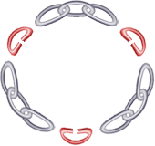

다양한 길이의 금사슬을 연결해 목걸이를 만들어야 한다. 연결시키려면, 한 사슬의 끝쪽 고리의 일부를 절단하고 이를 다른 사슬의 끝 고리에 연결하면 된다. 고리를 절단하는 횟수를 최소화해서 목걸이를 만들어라.
Constraints
- sections의 길이는 1이상 50이하다.
- sections의 요소는 1부터 2,147,483,647이하다.
- sections의 모든 요소의 합은 3이상 2,147,483,647이하다.
Code
#include <algorithm>
#include <vector>
using namespace std;
class GoldenChain {
public:
int minCuts(vector<int> sections) {
int cuts = 0, snum = sections.size()-1;
sort(sections.begin(),sections.end());
for (int i = 0; i <= snum; ) {
if (sections[i]-- > 0) {
--snum;
++cuts;
}
else ++i;
}
return cuts;
}
};
Explanation
각 사슬의 길이를 가진 secitons 벡터를 정렬한다. 제일 작은 값을 가진 사슬의 고리를 잘라내고, 이를 가장 긴 길이의 사슬에 연결시킨다. 현재 사슬의 고리가 없으면 그 다음 사슬로 넘어간다. 이러한 방식으로 모든 사슬을 연결해 나간다.

그림 1 3개의 사슬은 3개의 고리가 필요하다.